Front and Loading Units
Refer to Common Features for features found on every tab (Common Control, Communication Status, Buttons).
 Main (tab)
Main (tab)
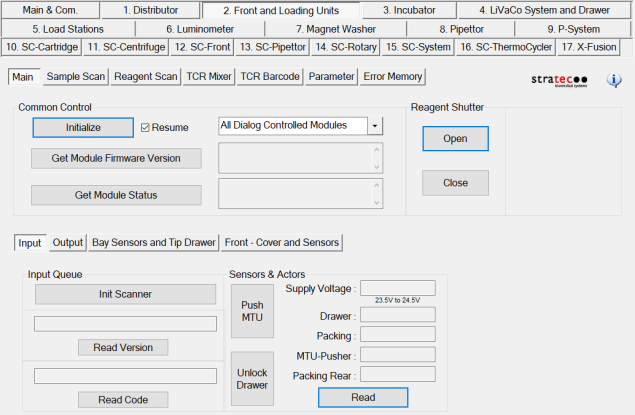
Reagent Shutter buttons
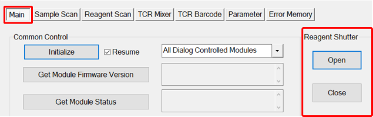
- Manually open and close the Reagent Shutter.
Input
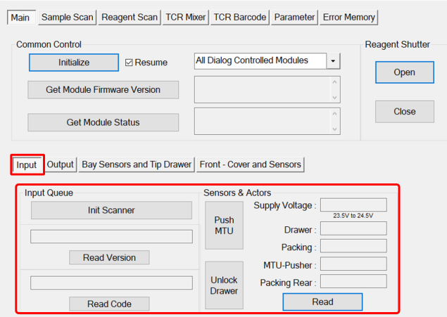
- Init Scanner—Initializes the MTU Multi-tube unit—Container used to process tests in the instrument. An MTU contains five separate reaction tubes. The MTU is moved through the instrument by the linear distributor and includes five tiplets for pipettiing to be used in the mag wash station. Barcode Scanner.
- Read Version—Reads barcode symbol.
- Read Code—Reads the MTU label.
- Unlock Drawer Icon—Initializes the MTU Barcode Scanner.
- Push MTU Icon—Tightens and secures MTU stack Advance MTU.
- Read Icon—Allows an FSE to Read sensor and supply voltage.
Output
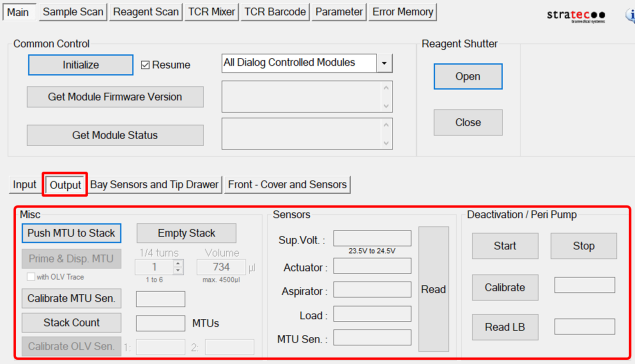
Misc.
- Push MTU to Stack—Moves the MTU to the Output Queue Stack for aspiration.
- Prime Operation of pumping fluid through tubing to ensure proper and consistent fluid delivery (remove air from the tubing, etc.). & Dispense Icon—Primes the Peristaltic Pump and dispenses the correct volume of buffer and bleach into each tube of the MTU.
- Calibrate MTU Sensor Icon—Calibrates the MTU present sensor.
- Stack Count Icon—Displays the number of MTUs waiting to be aspirated.
- Calibrate OLV Sensor Icon—Calibrates the OLV sensor.
- Empty Stack Icon—Removes all MTUs from the Output Queue
Sensors
- Read Icon—Reads sensors and supply voltage.
Deactivation/Peri Pump
- Start Icon—Starts the pump. Warning—Make sure an MTU is in place.
- Stop Icon—Stops the pump.
- Calibrate Icon—Calibrates pump dispense.
- Read LB Icon—Reads the pump home sensor.
Bay Sensors and Tip Drawer
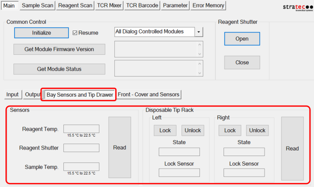
Sensors
- Read Icon—Reads temperatures and the reagent shutter position.
Disposable Tip Rack
Left/Right
- Lock and Unlock Icon—Unlocks the left or right Tip Drawer.
- Read Icon—Reads the Tip Drawer open or closed state and lock sensors.
Front - Cover and Sensors
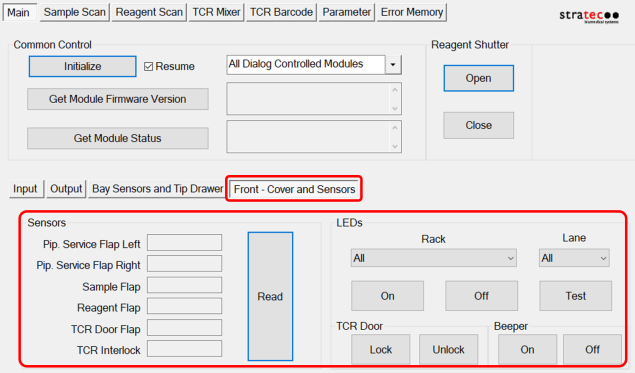
Sensors
- Read Icon—Checks open or closed status of the front doors.
LEDs
- Checks all LEDs and the beeper on the front panel.
Sample Scan (tab)
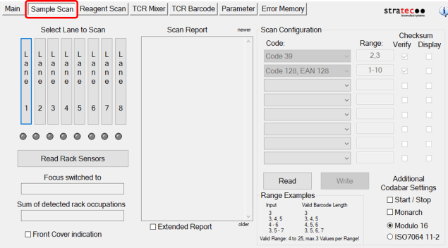
- Allows an FSE to read the Sample Rack sensors and barcodes.
Reagent Scan (tab)
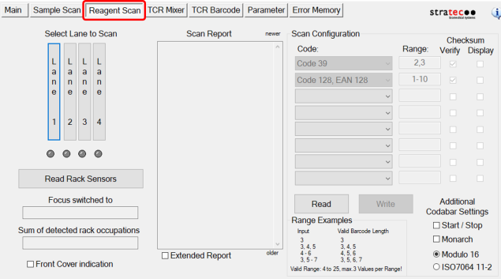
- Allows an FSE to read the Reagent Rack sensors and barcodes.
TCR Mixer (tab)
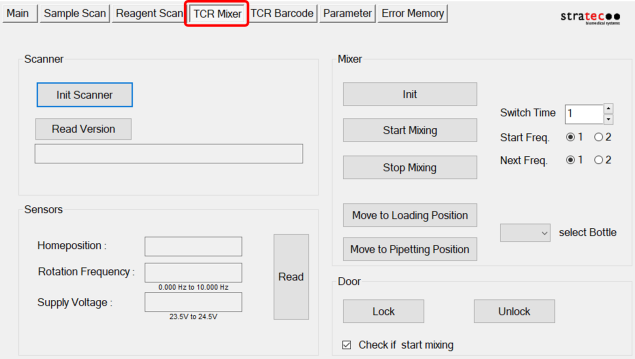
- Allows the FSE to test: TCR Target capture reagent—An assay-specific reagent added as part of specimen pipetting. mixer, and home sensors
TCR Barcode (tab)
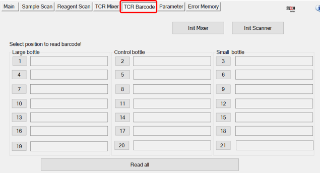
- Allows the FSE to test: TCR barcode scanner
Parameter (tab)
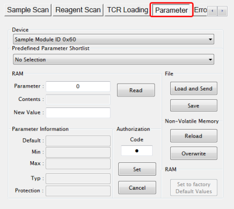
- Display any parameter value of the selected Device by entering a Parameter number and clicking the Read button.
Error Memory (tab)
- Lists errors created by module movement.
 button at the top of the page to send feedback, comments, or change requests.
button at the top of the page to send feedback, comments, or change requests.